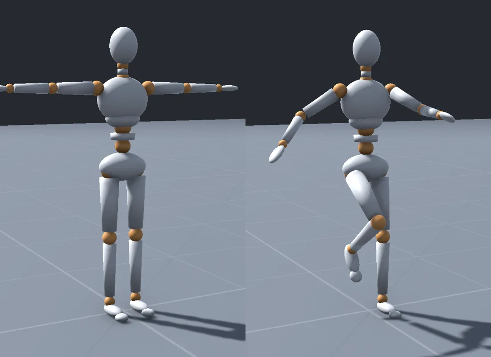
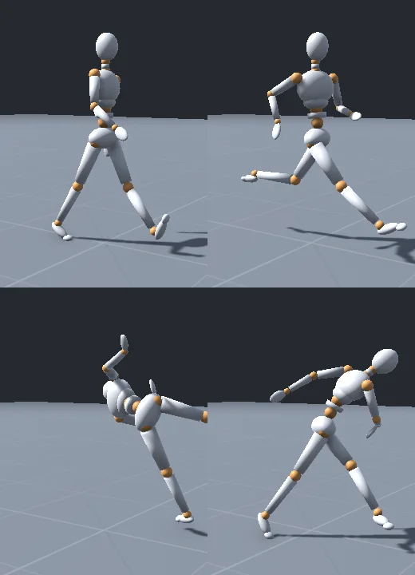

만드는 것
캐릭터는 하나, 볼 것은 관절.
얼굴도 옷도 없는 마네킹이라 움직임이 어색하면 바로 티가 납니다. 그 어색함을 찾아서 고치는 게 이 프로젝트의 전부예요.
몸
공 모양 관절이 보이는 데생 인형. 조각마다 뼈 하나.
움직임
걷기·달리기·점프부터 발차기·내려찍기·밧줄 휘두르기까지.
들여다보기
느리게 보기, 궤적, 관절 각도, 무게중심을 게임 안에서 켜고 끔.
놀이
날아오는 공을 타이밍 맞춰 차 내는 미니게임 한 판.
참고한 영상 네 개
도구는 달라도 공통점은 손으로 다듬은 타이밍.
tomsilf_motion
성문 틈의 손Blender로 모델링·조각·애니메이션 후 렌더한 영상. 게임 아님.
회색 덩어리로 먼저 움직임을 잡고 나중에 재질을 입히는 순서.
jankyanims
공 튕겨내기 시제품격자 바닥 위 실제 게임 화면. 언리얼 기본 맵으로 보임(추정).
타이밍 판정 미니게임. 회색 격자 맵에서 움직임부터 완성하는 방식.
Arthur Munoz
No Rest for the Wicked 직업 공격전문 애니메이터가 Maya에서 키프레임으로 만든 출시작 모션.
예비 동작 → 타격 → 회복의 박자, 바닥 파편까지 같이 움직이는 무게감.
Rotem Ninyo
밧줄 철퇴Maya + Kiel Figgins 리그로 만든 게임 애니메이션 연습작.
몸보다 늦게 따라오는 밧줄(2차 동작). 무기가 몸을 끌고 가는 느낌.
도구
전부 무료, 이 노트북에서 돌아가는 것만.
노트북은 Intel Arc 내장 그래픽과 RAM 16GB. 무거운 엔진보다 가볍게 자주 돌려 보는 쪽을 골랐습니다.
몸 만들기
Blender
관절 마네킹 모델을 파이썬 스크립트로 생성해 FBX로 내보냄.
손으로 깎지 않아도 돼서 처음부터 비율·관절 위치를 숫자로 고칠 수 있음.
무료 · 상업 OK뼈와 기본 동작
Mixamo
걷기·달리기·점프 같은 기본 동작 수천 개. 뼈는 직접 넣고 동작만 받음.
자동 리깅은 조각난 마네킹을 거부하거나 살처럼 휘게 만들 수 있어서. 동작은 Unity가 마네킹에 옮겨 입힘.
무료 · 상업 OK내 동작
Blender · QuickMagic
발차기·내려찍기는 키프레임으로. 폰으로 찍은 내 동작은 AI 모션캡처로.
손으로 만든 것과 찍은 것을 나란히 놓고 비교하는 게 공부가 됨.
무료 · QuickMagic은 비상업움직이고 들여다보기
Unity 6
조작, 동작 섞기, 발 IK, 관찰 도구, 미니게임.
이미 설치돼 있고, C# 코드라 Claude가 직접 만들고 자동으로 검사할 수 있음.
무료고르지 않은 것
Unreal Engine 5기본 마네킹·모션 매칭 예제가 훌륭하지만 내장 그래픽 노트북엔 무겁고, 블루프린트는 Claude가 글로 고치기 어려움.Maya영상 두 개가 쓴 도구. 학생판은 무료지만 상업적 이용 금지라 나중을 생각해 Blender로.Cascadeur 무료판물리 기반 보정은 좋지만 무료판은 자기 형식(.casc)으로만 저장돼 Unity로 못 가져옴.
마네킹 설계
조각 하나에 뼈 하나.
마네킹은 살이 휘지 않아서, 뼈마다 몸 조각을 하나씩 붙이면 끝입니다. 사람 캐릭터에서 가장 어려운 피부 가중치 작업이 통째로 사라져요.


뼈 이름은 Mixamo 표준 그대로, 조각은 정점 그룹 100%로 뼈에. 그래서 Unity가 사람형(Humanoid)으로 인식하고, Mixamo·모션캡처 동작이 바로 입혀집니다.
관절이 움직일 수 있는 범위
이 범위를 넘으면 관찰 모드에서 그 관절이 빨갛게 바뀝니다. 부자연스러움을 숫자로 잡는 첫 번째 기준.
성인 정상 가동 범위 참고값(AAOS). 발목은 왼쪽이 발등 쪽, 오른쪽이 발바닥 쪽.
자연스러움을 재는 법
“어색하다”를 화면에 띄우기.
게임 안에서 켜고 끄는 관찰 도구 여섯 개. 느낌으로만 보던 걸 선과 숫자로 봅니다.
발 미끄러짐
디딘 발 속도 ≈ 0 cm/s땅을 디딘 발이 미끄러지면 스케이트 타는 것처럼 보임. 디딘 동안의 발 속도를 바닥에 표시.
무게중심
점이 발 사이 면 안몸의 무게중심을 바닥에 점으로 찍고, 두 발이 만드는 면을 그림. 점이 밖으로 나가면 넘어져야 정상.
궤적
손끝·발끝이 곡선사람 손발은 호를 그리며 움직임. 직선으로 꺾이면 로봇처럼 보임. 위 첫 화면의 주황 선이 이것.
가동 범위
넘으면 관절 빨강옆 표의 범위를 넘는 순간 그 관절을 표시. 모션캡처가 팔꿈치를 거꾸로 꺾는 경우를 바로 잡아냄.
박자
예비 · 타격 · 회복 프레임공격 하나를 세 구간으로 나눠 프레임 수를 막대로 표시. 예비가 길면 무겁고, 너무 길면 굼뜸.
느리게 · 한 프레임씩
0.1× ~ 1×슬로모션과 프레임 넘기기, 이전 자세를 반투명하게 겹쳐 보기. 빠른 동작의 어색함은 느리게 봐야 보임.
단계
회색 바닥 위에서 하나씩.
한 단계가 끝나면 Claude가 자동 검사와 스크린샷으로 확인하고, 마지막 판단은 직접 눈으로 봅니다.
공부해서 정한 것 열한 가지를 이 기획서에 반영. 정한 것 보기
준비
Unity 6 새 프로젝트(바탕화면 Mardi), Blender 5.2 LTS 설치, 계단·경사·벽이 있는 회색 실험실.
Claude빈 회색 격자 맵이 열리고 자동 검사가 통과.
마네킹
Blender 스크립트로 관절 마네킹과 Mixamo 이름 뼈를 생성 → 큐브·액션 두 개로 내보내기 시험 → Unity에 사람형으로 가져오기 → Mixamo 동작 입히기, 자동 리깅 한 번 시험.
Claude · Mixamo 로그인만 나T자 자세와 Mixamo 동작 하나를 입힌 스크린샷.
걷고 뛰기
3인칭 조작, 카메라, 속도에 따라 걷기↔달리기를 섞는 블렌드 트리, 점프·착지.
Claude · 조작감은 나자동 걷기 테스트 통과, 발 미끄러짐 수치 기록.
관찰 도구
느리게 보기, 궤적, 관절 각도·가동 범위 경고, 무게중심, 고스트.
Claude키 하나로 켜고 끄는 화면 스크린샷 여섯 장.
자연스럽게
계단·경사에서 발 IK, 대상 쪽으로 고개 돌리기, 방향 틀 때 몸 기울기, 착지 충격.
Claude · 어색한 곳 찾기는 나같은 계단을 IK 켜고·끄고 비교한 화면.
내 동작
발차기·내려찍기는 Blender 키프레임, 같은 동작을 폰으로 찍어 QuickMagic으로 변환.
촬영은 나 · 다듬기는 함께손으로 만든 것과 찍은 것을 나란히 재생.
튕겨내기
날아오는 공을 타이밍 맞춰 차거나 쳐 내면 점수. 늦으면 맞고 휘청.
Claude · 재미 판단은 나한 판 처음부터 끝까지 자동 플레이 통과.
도전
맞으면 물리로 휘청였다가 돌아오는 반응(액티브 랙돌), 동작을 자동으로 이어 붙이는 모션 매칭(MotionMatching, MIT).
함께맞을 때마다 다르게 휘청이는 영상.
역할
코드는 Claude, 눈은 나.
내가 할 것
- Mixamo·QuickMagic 로그인과 다운로드
- 동작을 폰으로 찍기 (발차기, 내려찍기, 걷기)
- 직접 해 보고 어색한 곳 말하기
- 재미있는지 판단하기
Claude가 할 것
- Blender 마네킹 스크립트, Unity C# 전부
- 단계마다 자동 검사와 스크린샷
- 어색함을 숫자로 재는 관찰 도구
- 막히면 쉬운 말로 설명